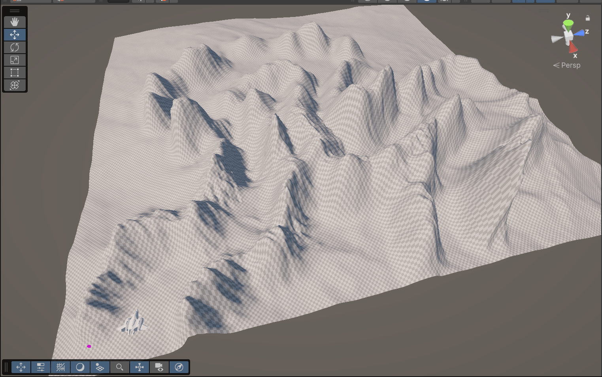
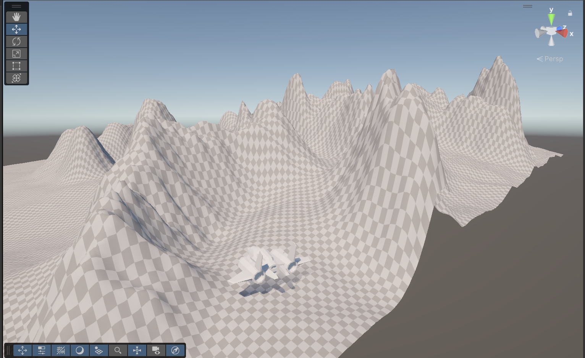
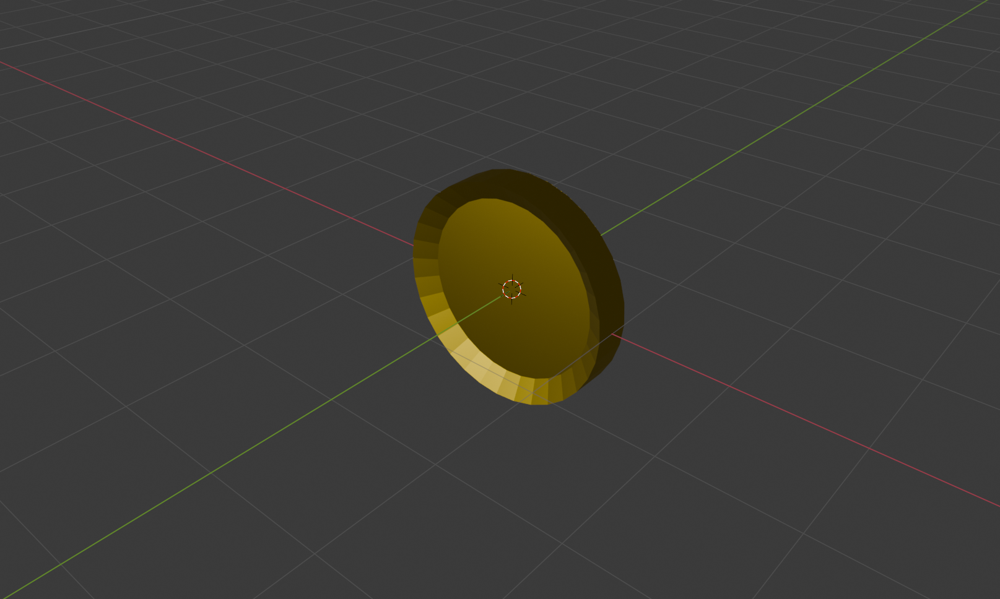

Bumpy Plane
This is a motion-controlled game. Players use both hands to individually control the airplane's two wings.
Game Rules: The faster and wider the player swings both hands, the more upward and forward force is generated by the wings. By creating a difference in the force applied to each wing, the player can steer the airplane in different directions.
Documentation
1. Create the terrain and place the airplane model
In modeling the snowy mountain, I first reshaped the terrain, then applied a marble texture across the entire surface. Next, I painted a snow texture on the top, followed by a soil texture at the base of the mountain. Finally, I added patches of grass texture to create smooth transitions between the different layers.
In modeling the snowy mountain, I first reshaped the terrain, then applied a marble texture across the entire surface. Next, I painted a snow texture on the top, followed by a soil texture at the base of the mountain. Finally, I added patches of grass texture to create smooth transitions between the different layers.
2. The first version of the volcano (without lava)
The volcano model was created using the same method. The difference lies in that the entire volcano is composed of a marble texture. Additionally, various bumps and depressions were sculpted on the surface to enhance realism and better accommodate the lava that would be added later.
3. Meadow
The construction of the meadow was relatively simple due to its less complex terrain. I painted it using soil and various grass textures, and added more grass models to enhance the overall detail.

4. Waterfall and lake
By altering the shape of the terrain, I created a waterfall and a lake, preparing them for the addition of water materials later on.

5. Add a water layer
I found a suitable water model on the Unity Asset Store (the lava was also sourced from there) and adjusted the terrain's elevation details to ensure a seamless fit between the terrain and the water.

6. Add trees
Selected tree trunk models were added to the small hills around the waterfall and lake, enhancing the scene with a more eerie and dreamlike atmosphere.

6. Add lava
The lava model was trimmed and scaled according to the shape of the volcano to ensure a perfect fit. Additionally, suitable lava rock models were placed at the base of the volcano to enhance the level of detail.
6. Add a "Jupiter" skybox
Finally, I selected a suitable HDRI image from the Poliigon website. I chose a Jupiter-themed background to place the entire scene in outer space, giving it a more magical and surreal atmosphere.